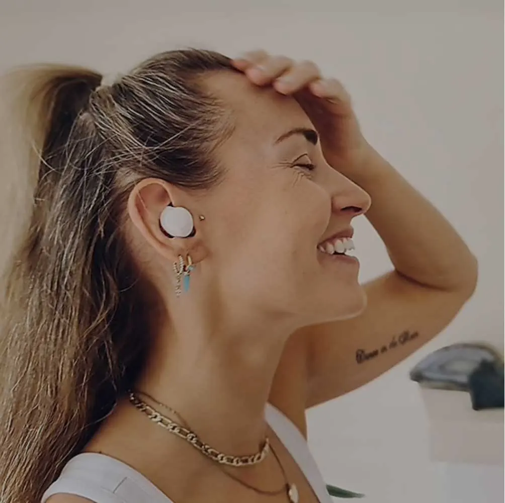

Case Study
Samsung Explore
An award-winning lifestyle publication for one of the world's largest tech brands.

Draft copy below — to be replaced with material from the existing Razorfish case study, edited to Belinda's voice.
As editor-in-chief of Samsung Explore at Razorfish, I led the editorial vision for a branded magazine designed to help readers elevate their passions with tech — not be sold to by it. Over three years the publication grew into one of the most decorated brand-journalism efforts in tech, and became a model for what voice can do for a product brand when the words come first.
The brief
Samsung wanted a content channel that didn't read like marketing. The category was crowded with shopping content, spec sheets, and lifestyle photography divorced from anything specific. We had a different question to answer: what could readers actually do with this technology that they weren't already doing?
The approach
We built Explore around three pillars — passions, places, and people — each treated with the editorial care of a feature publication. Stories had reporting. Photography was commissioned, not stocked. Headlines weren't optimized for search; they were written for the reader. Tech showed up where it served the story, not the other way around.
- Editorial calendar built around real cultural moments, not product launches
- Standards document covering voice, sourcing, fact-checking, and image rights
- A writers' bench drawn from major publications — not agency staff
- Quarterly performance reviews against editorial KPIs, not just engagement
Editorial sensibility
The voice was generous, curious, and confident enough to write about tech without genuflecting to it. We covered cycling and cooking and travel and music — and let the products show up the way they actually do in people's lives, which is to say, sometimes incidentally.
Results
- [X]industry awards
- [X]Mmonthly readers
- [X]long-form features published
- [X]m+avg. time on page
Stats above are placeholders. Pull final numbers from the Razorfish case study and any awards listings.